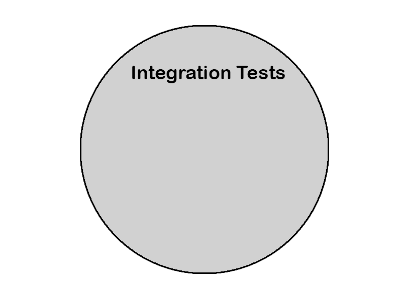
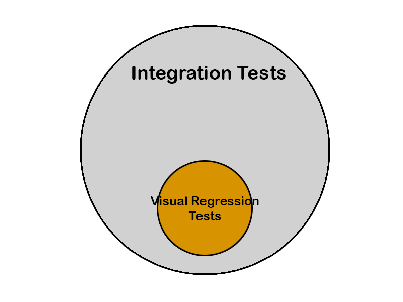
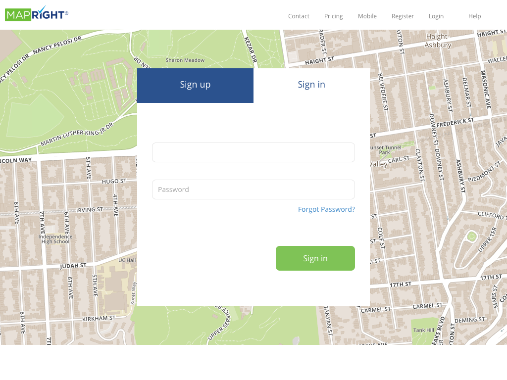
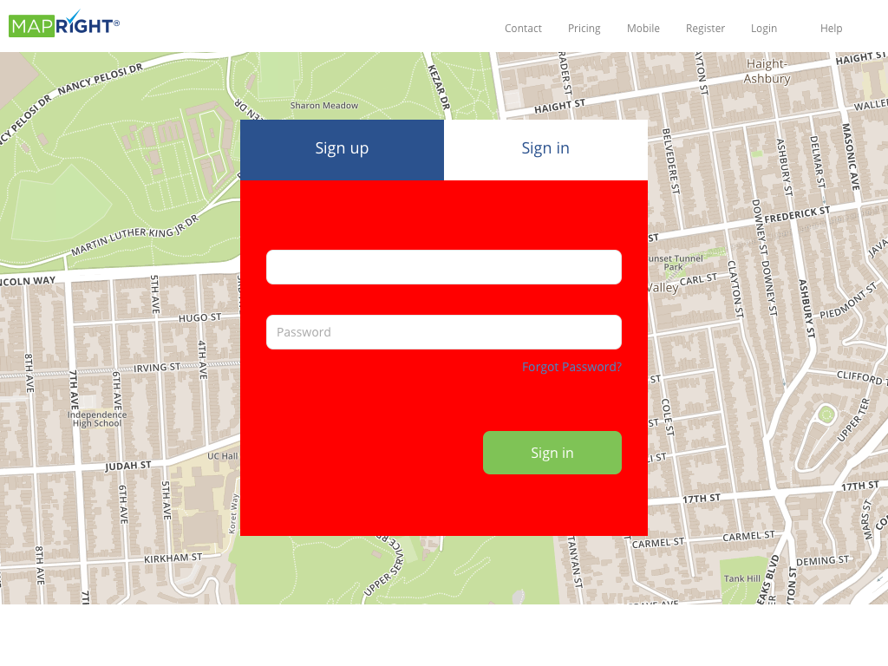
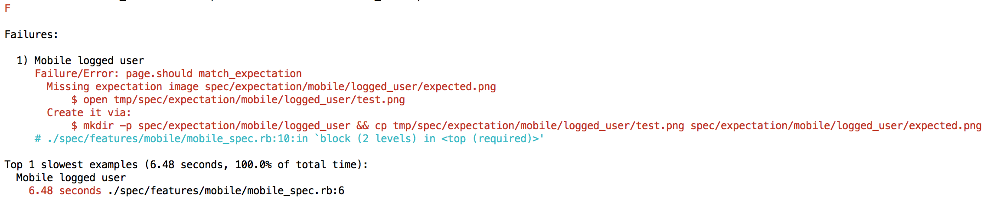
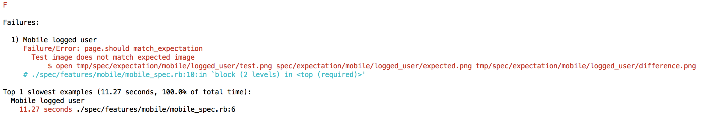
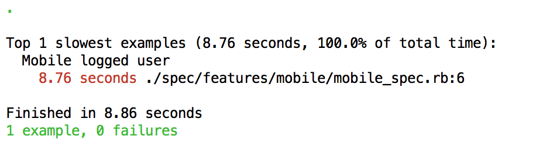

Visual Regression Testing
using Capybara & PhantomJS
The team
Some issues we were having
- Bad reusage of class names
- Lack of any type of testing
- Maps: hard to test
- Daily hot-fixes
- Very long sanity check
- New features everywhere
Integration Tests
Visual Regression Tests
Visual Regression Testing
This is how it should look
Ups! Something went wrong
* This actually never happend
Look... This is what changed
The setup
Actors
Rspec
v 2.14.1
Capybara
v 2.2.1
- Integration (or Acceptance) test framework
- Works out of the box
- Driver agnostic
- Intuitive API
- page object
- visit(path)
- click(selector)
- fill_in(selector, with: value)
- page.has_selector?(selector)
- find(selector)
PhantomJS
v 2.1.1
- Headless webkit browser
- Screen capture
- Page automation
- Network monitoring
Example
var page = require('webpage').create();
page.open('http://github.com/', function() {
page.render('github.png');
phantom.exit();
});
Poltergeist
v 1.10.0
- Capybara Driver for PhantomJS
- Extends Capybara DSL with PhantomJS features
- page.evaluate_script
- page.execute_script
- page.save_screenshot
- page.driver.click(x, y)
- D&D
Poltergeist glues together Capybara and PhantomJS
rspec-page-regression
- Provides the mechanism of visual regression tests, via a Rspec matcher
- Uses PhantomJS via Poltergeist (call to save_screenshot)
- Handles image comparison
How it works?
context "popup help" do
before(:each) do
click_button "Help"
end
it { expect(page).to match_expectation }
end
First time we run the test
Ups! Something went wrong (again)
Everything 👌🏼
Config
Capybara & PhantomJS Config
Register driver
require 'rspec/page-regression'
require 'capybara/rspec'
require 'capybara/poltergeist'
Capybara.register_driver :poltergeist do |app|
poltergeist_options = {
phantomjs: Phantomjs.path,
js_errors: false,
debug: true,
phantomjs_logger: File.open('path', 'a'),
phantomjs_options: [
'--debug=true',
'--load-images=yes',
//...
]
}
Capybara::Poltergeist::Driver.new(app, poltergeist_options)
end
spec/capybara_helper.rb
What if I want to toggle between tests with and without images?
Define one driver for each scenario
//...
Capybara.register_driver :poltergeist_without_images do |app|
poltergeist_options = {
//...
phantomjs_options: [
//...
'--load-images=no'
]
}
Capybara::Poltergeist::Driver.new(app, poltergeist_options)
end
Capybara.register_driver :poltergeist_with_images do |app|
poltergeist_options = {
//...
phantomjs_options: [
//...
'--load-images=yes'
]
}
Capybara::Poltergeist::Driver.new(app, poltergeist_options)
end
spec/capybara_helper.rb
Set wait time
//...
Capybara.default_wait_time = 8 // Default: 5
spec/capybara_helper.rb
Rspec Config
Set drivers
require 'capybara_helper'
RSpec.configure do |config|
//...
// No images by default
Capybara.javascript_driver = :poltergeist_without_images
config.before(type: :feature) do
// Include images if it is declared on the spec
if example.metadata[:images]
Capybara.javascript_driver = :poltergeist_with_images
end
end
//...
end
spec/spec_helper.rb
Disable transactional fixtures
RSpec.configure do |config|
//...
config.use_transactional_fixtures = false
//...
end
spec/spec_helper.rb
Config DatabaseCleaner
RSpec.configure do |config| //... config.before(:each) do DatabaseCleaner.strategy = if example.metadata[:js] :truncation else :transaction end DatabaseCleaner.start end config.after(:each) do DatabaseCleaner.clean end //...
spec/spec_helper.rb
The specs
require 'spec_helper'
feature "Pricing", js: true, images: true do
let(:user) { create(:user) }
it 'should correctly render pricing page' do
sign_in_with user.email, user.password
visit pricing_path
page.should match_expectation
end
end
spec/features/pricing/pricing_spec.rb
Demo
Roadmap
- Integration with Jenkins
- Comparison threshold
- Flexbox bugs
Cons
- Time ⚠️
- DatabaseCleaner
- Tests will fail for every small change
- Commited images